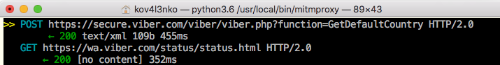
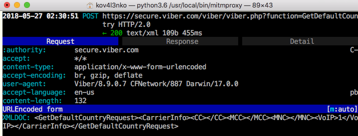
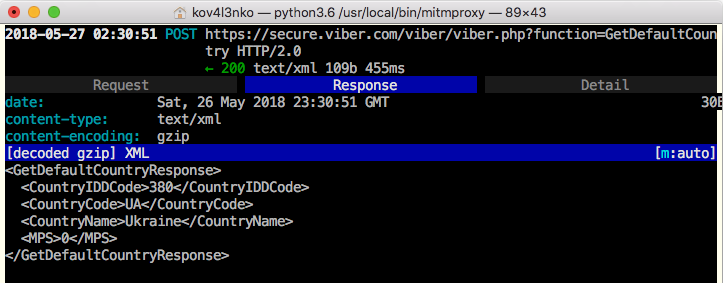

My motivation to start this research was simple. I wanted to see HTTPs traffic of Viber 8.9.0.7 on iOS 11.0.1 with Electra 1.0.4. I tried SSLKillSwitch2, but it didn’t disable SSL pinning. I have no idea why. Anyway, I did a research and wrote a simple script to disable SSL pinning in Viber by hooking just a single iOS Security framework function SecTrustEvaluate(...).
SecTrustEvaluate(...) worksThe function declaration is
OSStatus SecTrustEvaluate(SecTrustRef trust, SecTrustResultType *result);
Here is the functions arguments according to Apple official docu:
trust is a “trust manager object”. In fact, it’s an ObjC object, containing information about certificates and check rules (policies). The object is usually created by SecTrustCreateWithCertificates(...).
result is a pointer to SecTrustResultType (which is actually int).
The function evaluates the trust manager object: extract the certificates and check rules from the object, and check the certificates against the rules. If the check result is ok, the function writes kSecTrustResultProceed (=1) to result and returns 0 for success.
SecTrustEvaluate(...)I wrote a Frida JS script. It patches SecTrustEvaluate(...). As result, the patched function
kSecTrustResultProceed (=1) to result;0.The script code:
/*
****************************************
killSSL.js Frida script
by Dima Kovalenko
****************************************
Usage:
1. Run Viber on the device
2. Inject the script to the process:
$ frida -U -n Viber -l killSSL.js
3. SSL pinning in Viber HTTPs is
disabled. Now you can intercept
Viber HTTPs requests, e.g. with
mitmproxy.
*/
// Are we debugging it?
DEBUG = true;
function main() {
// Get SecTrustEvaluate address
var SecTrustEvaluate_prt = Module.findExportByName("Security", "SecTrustEvaluate");
if (SecTrustEvaluate_prt == null) {
console.log("[!] Security!SecTrustEvaluate(...) not found!");
return;
}
// Create native function wrappers for SecTrustEvaluate
var SecTrustEvaluate = new NativeFunction(SecTrustEvaluate_prt, "int", ["pointer", "pointer"]);
// Hook SecTrustEvaluate
Interceptor.replace(SecTrustEvaluate_prt, new NativeCallback(function(trust, result) {
// Show "hit!" message if we are in debugging mode
if (DEBUG) console.log("[*] SecTrustEvaluate(...) hit!");
// Call original function
var osstatus = SecTrustEvaluate(trust, result);
// Change the result to kSecTrustResultProceed
Memory.writeU8(result, 1);
// Return errSecSuccess
return 0;
}, "int", ["pointer", "pointer"]));
// It's done!
console.log("[*] SecTrustEvaluate(...) hooked. SSL should be pinning disabled.");
}
// Run the script
main();
The result (some examples):



I tested the script on iPhone 5s running iOS 11.0.1 with Electra 1.0.4. It worked for
It didn’t work for AppStore. I did not test it with other versions of Viber or iOS, with other apps, or on other devices. So I’m not sure it will work for you.
Anyway, if you wanna try, do it on your own risk. Stable and safe work of the script is not guaranteed. Happy reversing! :)
Commenting is not available in this blog, but you can write me a letter or message. Please, note that English is not my native language. I'm sorry for mistakes/missprints, if any.
Prev: My experience with LLDB on Electra Jailbreak 1.0.4 (second edition)